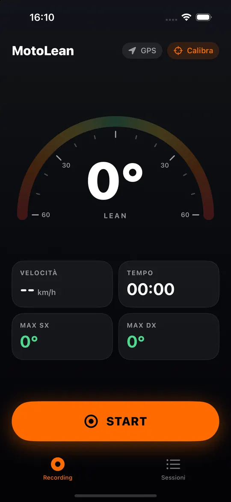
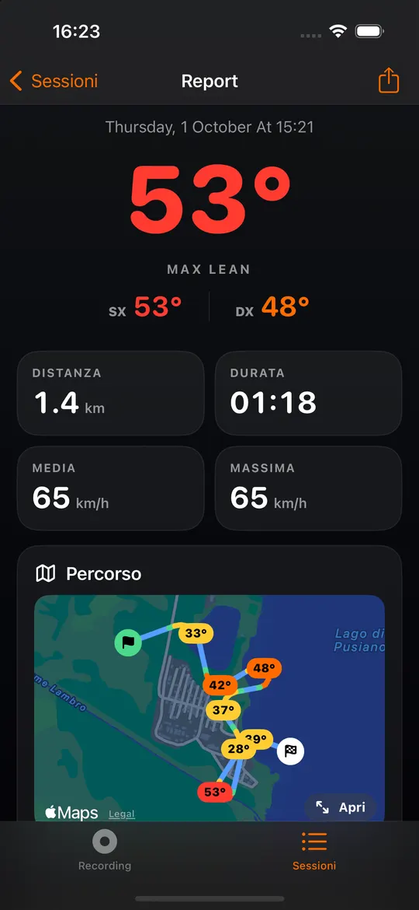

Strade consigliate
Pubblica i tratti più belli con voto e descrizione, filtra per curvosità e premi Portami lì per aprirli nel navigatore.
MotoLean misura la piega in curva con i sensori del telefono sul manubrio, registra ogni uscita e te la fa rivivere curva per curva.
Per iPhone. La versione Android è in arrivo.
Funzioni
Monti il telefono, calibri in due secondi a moto ferma e parti. Al resto pensa l'app.

Registra
Un grande indicatore mostra la piega del momento e i massimi per lato, con velocità, tempo e distanza. Il telefono può stare montato come vuoi: la calibrazione misura com'è fissato.

Report
Allo stop il giro si salva e si apre il report: percorso colorato per piega, mappa di calore, le curve rilevate con la piega massima di ognuna, grafici di piega e velocità.
Amici
Con un account i giri si salvano online. Il feed mostra le uscite degli amici, con 🔥 e commenti; la classifica conta km, piega, curve e ore in sella.
E poi
Pubblica i tratti più belli con voto e descrizione, filtra per curvosità e premi Portami lì per aprirli nel navigatore.
Dopo un urto forte seguito da una sosta, parte un conto alla rovescia: se non rispondi, l'app prepara SMS e chiamata al tuo contatto di emergenza.
Traccia il traguardo sulla mappa e ottieni tempi sul giro, giro ideale, tre settori e piega curva per curva.
Piega massima, giro più lungo, più curve, il bordo gomma di sempre e 13 badge da sbloccare.
Le tue moto con statistiche per moto e promemoria per tagliando, gomme e catena in base ai km.
Card immagine da pubblicare, file GPX per Strava e Google Earth, JSON con i dati grezzi.
Ogni giro nasce visibile solo a te. Scegli tu se mostrarlo agli amici o a tutti.
Nasconde agli altri la parte di percorso vicina a casa tua.
I dati salvati sul telefono sono cifrati, con la chiave nel portachiavi del dispositivo.
Nessuna pubblicità e nessun tracciamento. Puoi eliminare account e dati in ogni momento.
Scarica
MotoLean è in prova con un gruppo di motociclisti. Appena sarà su App Store e Google Play troverai qui i link per scaricarla.